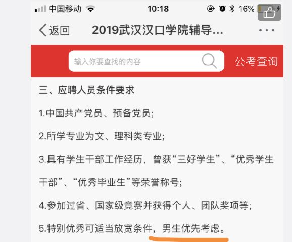
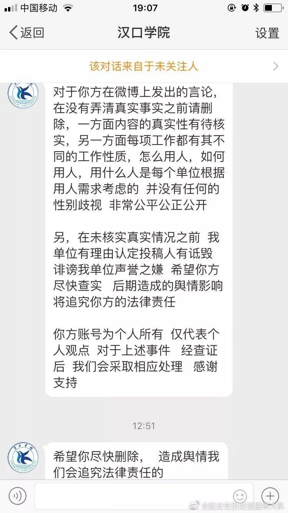
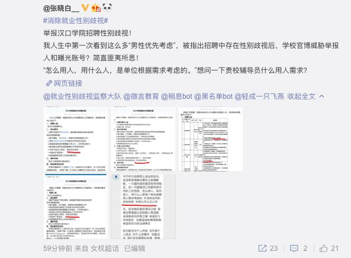
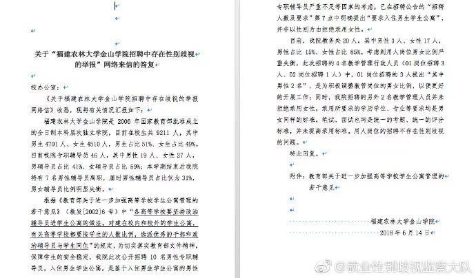
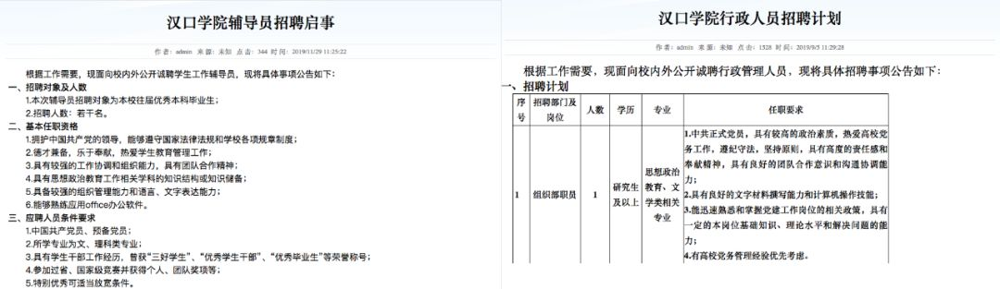

为什么要反对高校辅导员招聘性别歧视，除了常见的理由外，我们无法忍受那些“仅限男性”招进来的辅导员在就业群里转发性别歧视的招聘广告，甚至为其辩护。
汉口学院招聘辅导员“男性优先”被举报
11月的最后一天，我们微博后台收到一条投稿，举报汉口学院2019年辅导员招聘存在性别歧视。
（与汉口学院官网辅导员招聘信息一致，来源：http://hr.hkxy.edu.cn/Hr/zaopingxingxi/2019357.html）
12月1日上午，看到这条信息后，我和以前一样编辑发出，并且艾特了学校、人社局和妇联。晚上7点再打开微博，看到汉口学院中午给我发了2条私信，首先质疑招聘信息是假的，然后觉得即便是真的学校也是情有可原，最后要求不管怎样你先给我删帖。

（汉口学院官方微博私信内容截图）
看完私信内容后，我对学校罔顾事实，推卸责任，恐吓本人的行为十分不满，于是将上述内容在网上进行曝光，引发了网友的一些讨论。有网友认为“要求男性优先和仅限男性有着本质的区别，用人单位有权根据实际情况决定岗位是否可以限定性别”。但是，这名网友的观点明显有误，根据我国《劳动法》、《妇女权益保护法》等规定，用人单位在录用职工时，除国家规定的不适合妇女从事的工种和岗位外，不得以性别为由拒绝录用女性或者提高录用标准，这是法律问题，不存在讨价还价的空间。另外，从实践情况来看，我们关于”男性优先“的举报也获得了监管部门的同等处理。现实：一个岗位招聘性别歧视的背后
某个岗位性别歧视的背后可能是用人单位系统性的歧视，认为“男性优先”不是性别歧视的观念背后，可能是各种合理化的借口或隐藏的偏见，汉口学院就是最好的例子。辅导员招聘性别歧视被扒出来之后，网友@张晓白__曝光汉口学院2019年的招聘中，组织部、招生工作处、实验和设备管理中心职员也都要求“男生优先”。

（汉口学院招聘信息：http://hr.hkxy.edu.cn/Hr/zaopingxingxi/）
我们举报辅导员招聘性别歧视的历程
辅导员招聘相对集中和公开，我们一直都比较关注招聘中的性别歧视问题，并向多地教育和人社部门进行了举报。
14年至今收到的投稿
辅导员是性别歧视的重灾区，14年以来，我们陆续在微博上举报了下列高校辅导员招聘中存在性别歧视：浙江科技学院、浙江理工大学、浙江工贸职业技术学院、浙江工业职业技术学院、浙江工业大学、浙江交通职业技术学院、浙江中医药大学、中国计量大学、浙江师范大学、浙江机电职业技术学院、温州大学、浙江理工大学、浙江越秀外国语学院、浙江农林大学、浙江金融职业学院、浙江师范大学行知学院、温州职业技术学院、浙江农林大学长江大学、江汉大学、华中农业大学，武汉科技大学（待核实）、中国地质大学、汉口学院、湖北经济学院安徽师范大学、巢湖学院、安徽工业大学、安徽师范大学、合肥工业大学、滁州学院苏州大学应用技术学院、南京林业大学、淮海工学院、南京工业大学中南大学、湖南大学、天津科技大学、中国民航大学、东北电力大学、哈尔滨医科大学大庆校区、大连财经学院、西安工业大学、咸阳师范学院、四川外国语大学、广东职业技术学院、福建农林大学金山学院、上海电机学院文理学院、江西农业大学、银川能源学院、新疆财经大学、塔里木大学。高校：教育部规定辅导员要入住学生公寓
18年福建农林大学金山学院将教育部2002年要求高校政治辅导员入住学生公寓的规定解读成，男性辅导员入住男生公寓，女性辅导员入住女生公寓，学校可以根据性别比例限制录取人的性别。
安徽省人社厅回应滁州学院招聘辅导员按性别录取
前不久，有网友向我们反馈举报滁州学院3月份按性别招聘辅导员，获得了安徽省人社厅的受理。后者称已经了解情况，批评教育并转教育厅处理。我们认认真真的举报了那么多所高校，没想到竟然是态度最恶劣的一所先改，纠正高校辅导员招聘性别歧视道阻且长。
（汉口学院2019年性别歧视招聘广告均已改正）
作者：paper 资料来源：@就业性别歧视监察大队